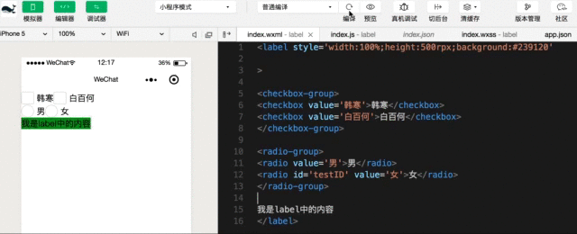
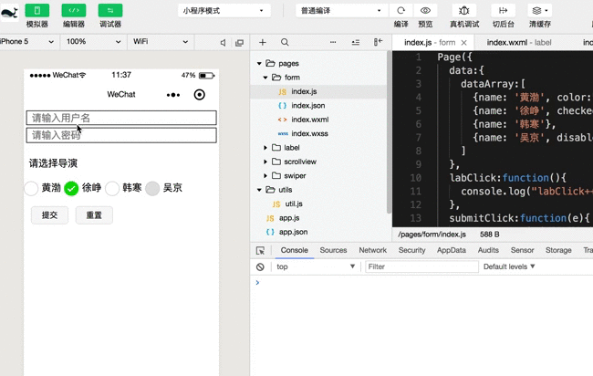

本文介绍小程序中的基础组件，主要包括form表单、radio和label等组件的基本使用和综合示例。
form表单组件在小程序开发中常用于收集和获取用户输入(选择)的数据，属于表单类组件，小程序本身的特点决定了我们在对页面进行操作的时候无法像前端开发中那样可以用DOM或一些选择器引擎框架来处理。因此，在特定的场景中form表单组件就成为了必要的几乎也是唯一的选择，它能够将组件内用户输入的switch、input、 checkbox、slider、radio和picker等组件的信息提交，通过触发绑定事件在回调函数的事件对象参数来获取对应的数据。
这里列出form表单组件的主要属性
bindreset form表单重置时会触发reset事件。
bindsubmit form表单提交时会触发submit事件。
report-submit 是否返回 formId ，用于发送模板消息，布尔类型，默认值为false。
在使用的form表单组件的时候需要注意，表单组件的submit和reset事件触发的方式比较特殊，需要和整个表单组件中formType 为 submit 或 reset的 button组件 相关联。
也就是说，当form组件内部包含的拥有formType属性且其值为submit的button组件被点击时，才会触发并执行form组件中bindsubmit事件绑定的回调函数，表示要提交整个表单中的数据。这时，我们可以通过在回调函数中事件对象的detail属性来获取这些数据。
form组件内部其他表单类型组件的数据在提交的时候总是要以键值对(`key-value`)的方式进行处理，所以需要给每个表单类型的组件设置name属性来确定其key值。
2.0 单项选择器组件( radio-group 和 radio )
单项选择器组件其实由radio-group和radio两个具体的组件构成。
radio组件表示的是每一个的单选项目，而radio-group用来包裹住多个单选项目。
radio组件
color radio选中的颜色。
value 当前radio选项的值。
disabled 当前radio选项是否被禁用，布尔类型，默认值为false。
checked 当前radio是否被选中，布尔类型，具有排它性会覆盖。
radio-group组件
bindchange 当选中项发生变化时触发change事件并执行绑定的方法，可通过事件对象来获取当前选中项的值(事件对象.detail)。
3.0 label组件
label组件主要用来改进表单组件的可用性。在label组件中拥有唯一的for属性，通过该属性可以找到对应的id，或者将其他的组件放在该标签下，当点击时对应的组件会被触发。
for 该属性值对应为绑定组件的id。
注意 label组件中for属性的优先级高于内部组件，内部有多个组件的时候默认触发第一个。目前可以绑定的组件有主要有：button组件, checkbox组件, radio组件和 switch组件。
label组件的使用示例
1
2
3
4
5
6
7
8
9
10
11
12
13
14
| <label style='width:100%;height:500rpx;background:#239120' for='testID'>
<checkbox-group>
<checkbox value='韩寒'>韩寒</checkbox>
<checkbox value='白百何'>白百何</checkbox>
</checkbox-group>
<radio-group>
<radio id='testID' value='男'>男</radio>
<radio value='女'>女</radio>
</radio-group>
我是label中的内容
</label>
|

4.0 多种组件使用的综合案例
1
2
3
4
5
6
7
8
9
10
11
12
13
14
15
16
17
18
19
20
21
| //001 wxml文件的内容
<form bindsubmit='submitClick' bindreset='resetClick'>
<input placeholder='请输入用户名' name='username'></input>
<input placeholder='请输入密码' name='password'></input>
<radio-group name='director' bindchange="radioChange">
<view>请选择导演</view>
<label bindtap='labClick' wx:key='index' wx:for="{{dataArray}}">
<radio value="{{item.name}}" checked="{{item.checked}}"
disabled='{{item.disabled}}' color='{{item.color}}'/> {{item.name}}
</label>
</radio-group>
<button size='mini' formType='submit'>提交</button>
<button size='mini' formType='reset'>重置</button>
</form>
|
1
2
3
4
5
6
7
8
9
10
11
12
13
14
15
16
17
18
19
20
21
22
23
24
| //002 wxss文件的内容
input
{
border: 1px solid #000;
margin: 10rpx 10rpx;
padding-left: 20rpx;
}
view
{
height: 100rpx;
line-height: 100rpx;
padding: 20rpx 20rpx;
}
radio-group
{
padding-bottom: 40rpx;
}
button
{
margin-left: 30rpx;
}
|
1
2
3
4
5
6
7
8
9
10
11
12
13
14
15
16
17
18
19
20
21
22
23
24
25
|
Page({
data:{
dataArray:[
{name: '黄渤', color:"red" },
{name: '徐峥', checked: 'true' },
{name: '韩寒'},
{name: '吴京', disabled:true}
]
},
labClick:function(){
console.log("labClick+++")
},
submitClick:function(e){
console.log("表单组件提交事件---submitClick");
console.log(e.detail.value);
},
resetClick:function(e){
console.log("表单组件重置事件---resetClick");
},
radioChange:function(e){
console.log("redio-group中的选中项发生变化--radioChange")
console.log(e.detail);
}
})
|
这里贴出上面代码的实现效果图。
